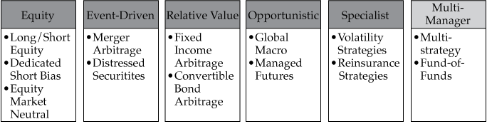

Alternative investments in portfolio management
private equity, hedge funds, real assets (including energy and commodity investments), commercial real estate, and private credit are included as alternative assets
Hedge fund Strategies
Some argue that investing in hedge funds is a key way to access the very best investment talent—those individuals who can adroitly navigate investment opportunities across a potentially wider universe of markets. Others argue that hedge funds are important because the alpha that may be produced in down markets is hard to source elsewhere.
Extreme tail risk in portfolios may be managed with the inclusion of relative value volatility or long volatility strategies, but it comes at the cost of a return drag during more normal market periods.
Hedge fund Characteristics:
- Legal/Regulatory overview
- Flexible mandates, few investment constraints
- Large investment universe
- Aggressive investment styles
- Relatively liberal use of leverage
- Hedge fund liquidity constraints
- Relatively high fee structures
The classification of hedge funds is further based on:
- Instruments
- Trading philosophy
- Types of risk
This image summarizes all hedge fund strategies:

As a list here are the various hedge fund strategies:
- Equity Strategies
- Long/Short
- Dedicated short
- Equity market neutral
- Event-driven Strategies
- Merger Arbitrage
- Distressed Securities
- Relative value
- Fixed Income arbitrage
- Convertible bond arbitrage
- Opportunistic
- Global Macro
- Managed futures
- Specialist
- Volatility trading
- Reinsurance/life settlements
- Multi- Manager
- Fund of funds
- Multi-strategy hedge funds
- Equity Strategies
- Long/Short
- Dedicated short
- Equity market neutral
- Event-driven Strategies
- Merger Arbitrage
- Distressed Securities
- Relative value
- Fixed Income arbitrage
- Convertible bond arbitrage
- Opportunistic
- Global Macro
- Managed futures
- Specialist
- Volatility trading
- Reinsurance/life settlements
- Multi- Manager
- Fund of funds
- Multi-strategy hedge funds
Asset Allocation to Alternative Investments